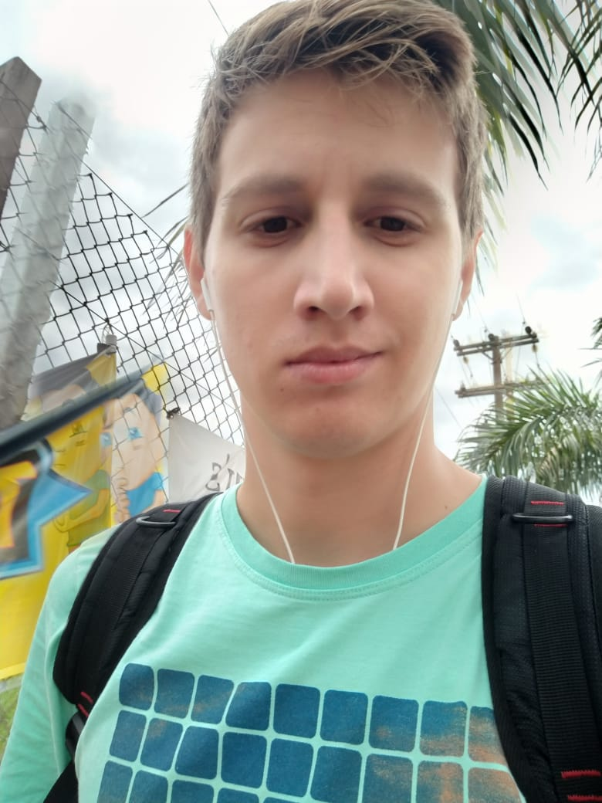

Juliano Backes

Graduando em Ciência da Computação pela Universidade Federal do Mato Grosso(2018-2022)
Áreas de Interesse:
- Inteligência Artificial
- Aprendizado de Máquina Automatizado(AutoML)
- Programação Orientada a Objetos
Links para outras páginas:
Emails para Contato:
- jlnbackes@gmail.com
- julianobackes@protonmail.com